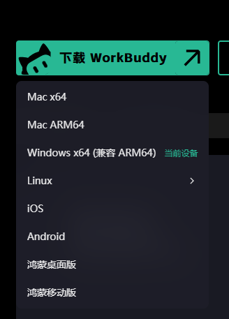

这一步最容易出问题。上次课最大的坑就是：电脑里装的不是最新版，界面和大家不一样，一节课都在找按钮。
WorkBuddy 的主形态是电脑桌面端，课程实操要求 Windows 或 macOS 电脑。开工前先对一遍：
| 检查项 | 最低要求 | 怎么查 |
|---|---|---|
| Windows 系统 | Windows 10 及以上 不支持 Windows 7 / 8 / 8.1 |
设置 → 系统 → 关于 → Windows 规格 |
| macOS 系统 | macOS 12.0 及以上 | 左上角 苹果菜单 → 关于本机 |
| Mac 芯片类型 | 必须分清 Apple 芯片 / Intel | 关于本机 → 「芯片」显示 Apple M 系列=Apple 芯片；显示 Intel=Intel 芯片 |
| 网络 | 可正常联网（调用 AI 模型服务） | 浏览器能正常打开网页即可 |
| 账号 | 已注册并登录 WorkBuddy 账号 | 首次登录即完成注册 |
| 版本 | 升级到最新版本 | 客户端内检查更新；旧版本界面与课程演示不一致 |
点一下你的设备，直接看结论：
| 你的设备 | 下载哪个 | 关键提醒 |
|---|---|---|
| Windows 10 / 11 （含 ARM 架构设备） |
Windows x64（兼容 ARM64） | 官网会自动识别并标注「当前设备」，直接下这一个就行 |
| Mac · M 系列芯片 （M1 / M2 / M3 / M4） |
Mac ARM64（.dmg） |
下错成 Intel 包会装不上或运行异常 |
| Mac · Intel 芯片 | Mac x64（.dmg） |
官网认不出芯片时默认给 x64，务必自己核一遍「关于本机」 |
| 统信 UOS / 银河麒麟 | 到系统应用商店里搜索 WorkBuddy | 官网不提供安装包，不要到处找 exe |
| iOS / Android 手机 | App Store / 华为·小米·应用宝 搜「WorkBuddy」 | 手机端是配套工具，不能替代电脑做课程实操 |
| 鸿蒙桌面版 / 鸿蒙移动版 | 华为应用市场搜索下载 | 部分版本功能不全，以电脑端为准 |

别带着「不就是个聊天机器人」的印象来上课。
WorkBuddy 是腾讯推出的全场景职场 AI 智能体桌面工作台。你说一句话，它自己拆任务、自己规划步骤、自己去操作文件，最后交给你可以直接用的文档、表格、PPT。
课程里用到的核心能力有三条：
我录制了成套的工具操作视频，案例全部来自真实金融业务场景，完全适配本次课程。关注视频号即可查看合集。
这一步不复杂，但课前体验过，第二天实操会顺很多。
扔给它一份真实业务文档。表格、流程说明、你现在天天在做的那件事，都可以。
写一段提示词，让 AI 把这份文档整理成标准作业流程 SOP。
再写一段提示词，把 SOP 变成可直接调用的 Skill。到这一步，智能体就成型了。
过程本身很简单。重点是先体验一遍「业务 → 智能体」的完整链路，知道每一步在干什么，第二天上手不慌。
只填三格，填多少算多少，不强制、不设门槛。
从一个你熟悉的真实业务场景出发，拆出三件事：
| 要素 | 要写什么 | 举个小例子 |
|---|---|---|
| I · 输入（Input） | 这件事的起点是什么资料、什么请求、什么数据 | 客户递交的一沓申请材料 |
| P · 处理（Process） | 中间要经过哪些判断、核对、计算、流转步骤 | 核对要素是否齐全 → 查规则 → 出结论 |
| O · 输出（Output） | 最后要交出去什么结果、给谁、以什么形式 | 一份审核意见 / 一张明细表 / 一段可复制的话术 |
下面每一条都踩过坑。出发前逐条打勾。
现场我们准备：插线板、HDMI 线、白板，网络已提前调试。50 人同时联网，网络会做冗余保障。